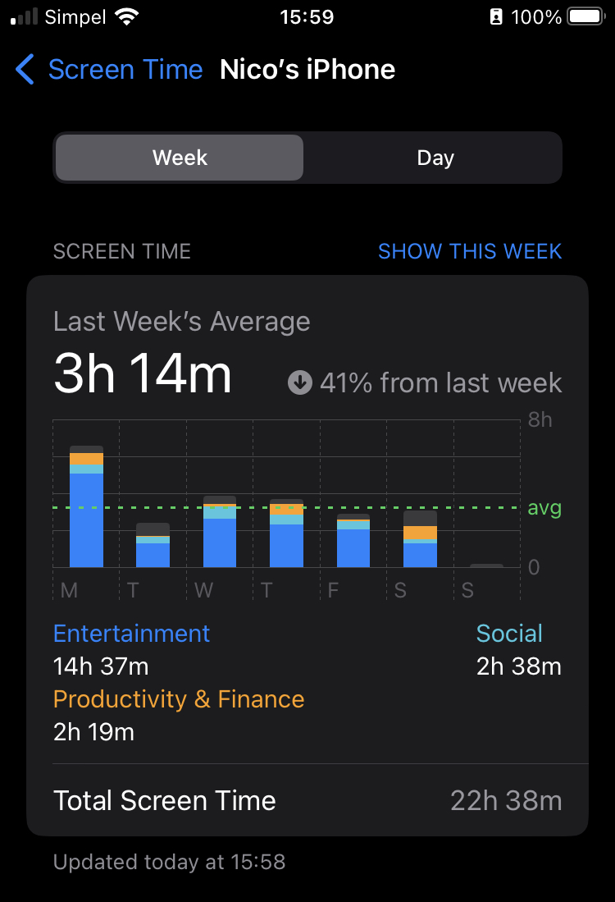
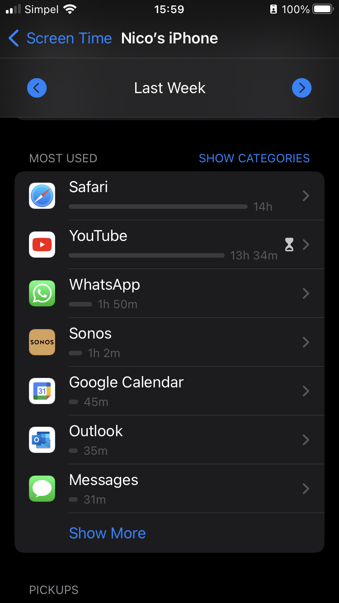
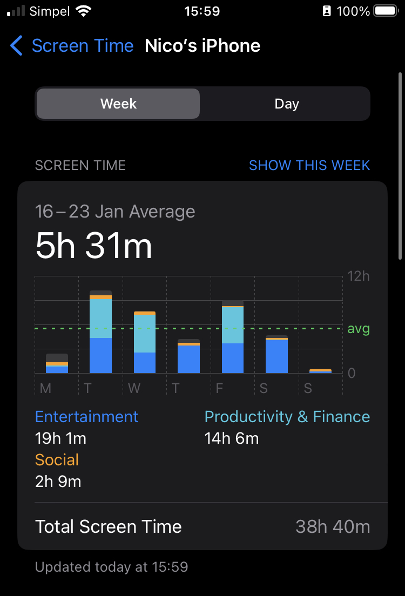
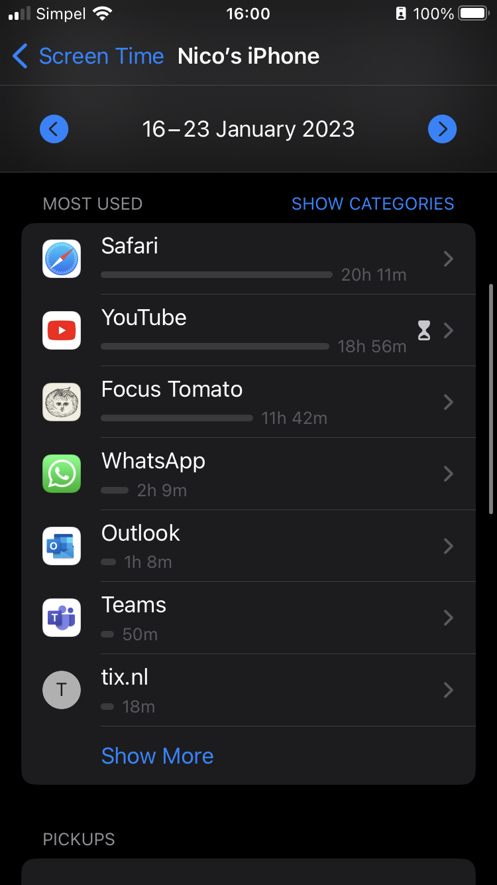

‘Ik ben de Heer, jullie God. Ik heb jullie uit Egypte weggehaald, en bevrijd uit de slavernij. Vereer geen andere goden. Vereer alleen mij. Maak geen beeld van een mens, of van een dier dat in de lucht, op het land of in het water leeft. Je mag geen beelden vereren of ervoor knielen. Want ik, de Heer, ben jullie God. Ik wil niet dat jullie andere goden dienen. Als iemand mij ontrouw is en andere goden gaat dienen, zal ik hem straffen. Dan straf ik hem en ook zijn nakomelingen, tot en met de vierde generatie. Maar als iemand mij liefheeft en zich aan mijn regels houdt, zal ik goed voor hem zijn. Ik zal ook goed zijn voor zijn nakomelingen, zelfs voor de duizendste generatie. Spreek mijn naam niet zomaar uit, zonder nadenken. Als iemand dat toch doet, zal ik hem straffen.
Je hebt 5-8 minuten de tijd om op je mobiel te zitten. Doe wat je maar wilt! *Scroll* op Insta, stuur een Snap naar een vriend. Wat je maar wilt. Als je maar in de zaal blijft.
Nu wil ik graag je mobieltje hebben. Lever het maar in.
Wat doet dit met je? Wat voel je nu ik je mobiel heb afgenomen?
En waarom gaan we zo snel met onze mobieltjes zitten? Waarom doen we het? En hoeveel tijd neemt het op?
Kun je kijken hoeveel scherm tijd je de afgelopen week gehad hebt?




Het neemt nogal wat tijd op! Ze zeggen vaak: Wat je aandacht geeft, dat groeit. Nou, mijn verslaving of afhankelijkheid van mijn mobiel groeit door het gebruik ervan.
We hebben net Exodus 20:2–7 gelezen. Daar roept God ons op om alleen Hem te dienen en geen afgoden en beelden te maken. Als je het zo hoort, ben je dan gehoorzaam aan dit gebod?
Wat zijn afgoden eigenlijk? Kunnen jullie daar wat bij bedenken? Hebben jullie daar een beeld bij?
Tim Keller, een Amerikaanse theoloog schreef een boekje over afgoden. Daarin zegt hij dat afgoden goede dingen zijn die we tot de belangrijkste dingen van ons leven maken.
Als ik het voorbeeld van het mobieltje en social media kan nemen: We maken iets goeds en handigs – mobiel, daar kan ik mee bellen, mensen appen, contact onderhouden, interessante filmpjes kijken – iets waar we niet zonder kunnen, waar we afhankelijk van zijn, we maken het het belangrijkste ding in ons leven.
Kunnen jullie nog voorbeelden noemen van afgoden?
Waarom maak ik me druk om afgoden? Is het echt zo verkeerd? Wat denken jullie?
Voorbeeld van Keller van de recessie – Onderscheid verdriet en wanhoop als je iets moet missen.
Het kan ons verlangen niet vervullen, het kan ons niet redden en beschermen. Daarvoor hebben we God nodig!
Het trekt ons aandacht af van God, het houdt ons van Hem weg. Het kan ook gebeuren als ik mijn mobiel op tafel legt als ik met m’n vrouw uit eten ga. Het mobieltje leidt me enorm af. Het komt mijn relatie met Ilse niet ten goede.
Jezus antwoordde: ’De eerste en belangrijkste regel is deze: “De HEER is je God. Je moet van Hem houden met je hele hart, met je hele ziel, en met je hele verstand.” Maar de tweede regel is net zo belangrijk: “Wan de mensen om je heen moet je evenveel houden als van jezelf.” Die twee regels zijn de basis van de wet en van de andere heilige boeken.
Twee scenario’s:
Verhaal vertellen met afleidingen (appjes)
Wat is je ervaring? Kon je je aandacht bij het verhaal houden?
Nu doen we hetzelfde, maar leg je het mobieltje weg.
Heb je nu meer aandacht?
Ga in de komende week twee of drie keer uit de Bijbel lezen of in de natuur lopen zonder je mobieltje. Zo heb je aandacht voor God.